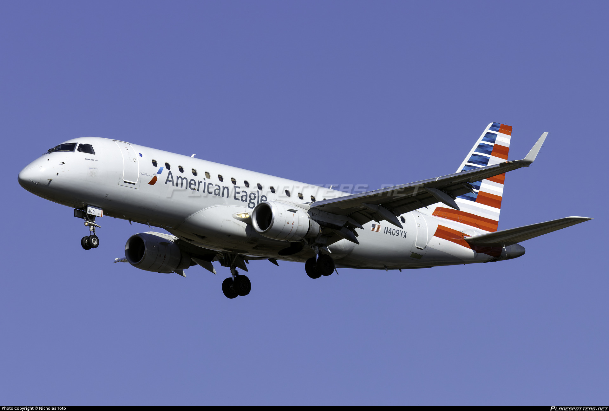

RPA4379 Emergency Diversion and Overweight Landing at JFK - September 2, 2025
N409YX - Credit: Nicholas Toto
Spotters and ATC reported several key facts: runway 22L was closed following the event, engine number 2 underwent inspection, the landing exceeded weight limits, and multiple emergency vehicles responded at the scene.
Republic 4379 Makes Emergency Landing at JFK - Engine 2 Under Inspection | AvHouse JFK
Executive summary
Shortly after departure from LaGuardia, Republic Airways flight RPA4379, operating for American Eagle, declared an emergency and diverted to JFK. The aircraft executed an overweight landing on runway 22L. Emergency response teams were on scene immediately. Engine number 2 is under inspection, and runway 22L was taken out of service to permit runway inspection and aircraft examination. No injuries have been reported in initial updates. Airline operations and airport traffic were impacted while the runway was closed and the aircraft was inspected.
What we know now - verified and eyewitness items
- Flight: RPA4379, Republic Airways for American Eagle - diversion from LaGuardia to JFK reported by spotters.
- Runway: Landing occurred on runway 22L at JFK. 22L was closed post-landing for inspection.
- Landing status: The landing was performed overweight. Crew elected to return without a fuel dump due to urgency reported in communications.
- Engine: Engine number 2 was reported for post landing inspection. Ground maintenance initiated initial checks on the scene.
- Emergency services: Multiple ARFF units and FDNY apparatus were observed tracking the aircraft through rollout. No foam discharge was reported in initial observations.
- Passengers: All passengers were safe and unharmed. The plane later taxied under its own power to Terminal 8.
Detailed timeline
Times are approximate and based on flight information and spotter reports.
| Time in EDT | Event |
|---|---|
| 1:07 PM EDT | N409YX takes off from Laguardia Airport and begins a holding pattern at 1:16 PM EDT, 10 minutes after departure. |
| 1:17 PM EDT | At 1:17 PM, the pilots declare an imminent emergency and squawk 7700. The flight becomes the most tracked in the world, being tracked by over 12,000 people. |
| 1:21 PM EDT | The Pilots decide that JFK will be the best airport to arrive at due to its proximity. |
| 1:24 PM EDT | N409YX sequenced for approach to runway 22L at JFK. Emergency services were alerted and rushed to runway 22L and the surrounding taxiways. |
| 1:30 PM EDT | N409YX performs a smooth overweight landing on runway 22L. Emergency vehicles follow rollout. |
| 1:31 - 2:10 PM EDT | The aircraft parked on Runway 22L, resulting in the runway being closed. Engine inspections commence on the aircraft. |
| 2:11 PM EDT | N409YX taxied under its own power to Terminal 8. All passengers disembarked and boarded on another flight. |
Operational impact - airport flow and passenger handling
Runway 22L is one of JFK's primary arrival runways. A closure for inspection reduces available runway capacity and forces controllers to redistribute traffic across remaining runways. This redistribution typically increases spacing between arrivals and can create a cascading effect of arrival and departure delays, especially during evening bank periods.
For passengers of RPA4379, the immediate priorities for the airline were safety verification, disembarkation logistics, and passenger care. Airline staff coordinated buses, rebooking, and onward travel options. For flights scheduled to use 22L the airline coordination teams and the airport operations center issued reassignments and delay alerts.
Emergency response - who did what
Port Authority ARFF, FDNY aircraft rescue and firefighting units, and airport operations teams were involved in the response. Standard ARFF procedure for suspected engine issues or overweight landings involves staging multiple fire trucks and rescue vehicles at discrete points along the runway to provide immediate suppression and rescue if a fire or structural failure occurs.
Responders performed visual checks for hot brakes, smoke, leak indications, and foreign object debris on the pavement. Cooling cycles on brakes were monitored. Because no active fire or smoke was reported by observers, a full foam application was not used. Medical teams were ready but were not required to treat passengers at scene in initial reports.
Technical notes - engine number 2 and what inspection entails
Engine number 2 refers to the outboard or right-side engine on many twin engine types. Post landing inspection of an engine typically follows a standard sequence: visual external inspection for obvious damage, borescope inspection of internal components if warranted, checks of accessory gearboxes and mounts, and vibration data downloads where available.
Because the landing was overweight, ground crews will pay particular attention to landing gear and brake systems as well as engine mounts and pylons. Overweight landings increase the load on landing gear struts and brake packs and can cause heat or mechanical stress that requires removal and bench testing of suspect components.
Physics and risks of overweight landings - a plain language explainer
An aircraft's maximum landing weight is the threshold above which the aircraft structure and systems are not guaranteed to behave as certified. If an aircraft lands above that weight the energy to dissipate during touchdown and rollout is higher. That energy is absorbed by the landing gear, tires, and brakes, and if not managed properly it can lead to brake overheating, tire failure, or longer stopping distances.
Pilots weigh options in real time. If the suspected problem poses an immediate safety threat - for example, an engine vibration that could lead to failure - the crew may choose to land overweight rather than wait to burn or jettison fuel. That choice prioritizes immediate control and safety while accepting the need for post landing inspections and repairs.
Air traffic control coordination - priority handling
When a crew declares an emergency, controllers grant priority handling and clear the aircraft for the most suitable approach. In this case the selection of JFK was likely driven by runway length, rescue and firefighting resources, and the ability to move the aircraft to secure ramps if maintenance action is required.
Controllers also coordinate to open gaps in traffic, reroute other aircraft, and notify airport operations. Coordination with ramp control and the airline operations center is immediate so that recovery actions and passenger care can be mobilized.
Aircraft type, operator notes, and service context
Observers identified the flight designator as RPA4379, which correlates to operations by Republic Airways for American Eagle on certain regional routes. Field reports identified the airframe as a regional jet type, loaded for a short to medium haul leg from LaGuardia to Nashville prior to diversion. Operator specific maintenance procedures now control the investigation timeline.
Pilots requested an inspection for engine 2. The most likely scenario is a bird strike.
Maintenance and investigative steps - what comes next
Initial on scene inspection by line maintenance is followed by a staged investigation if faults are found. Steps include removal of inspection panels, borescope of suspect engine areas, vibration analysis via recorded data, and possibly an engine teardown if internal damage is suspected. The operator will document the event in its maintenance log and file required reports with the FAA and the relevant safety authority.
If components are suspect, the aircraft may be grounded while parts are replaced or an engine is removed for shop inspection. The airline's operations control center will plan for replacement equipment or alternate routing for the affected passengers.
Runway 22L inspection and reopening protocol
Runway closure allows airport teams to inspect the pavement for scoring, rubber deposition, or damage caused by heavy gear loads. Inspections include visual checks, friction testing where necessary, and a Foreign Object Debris sweep. If brake material or tire fragments are present, runways may require cleaning before reopening.
Once inspections confirm pavement integrity and no hazards remain, tower and airport operations coordinate a phased reopening. Reopening can be staged - for example reopening for departures only or for certain aircraft types first - depending on operational assessments.
Comparisons to prior overweight landings - context and outcomes
Overweight landings have occurred at airports worldwide. Outcomes vary by the magnitude of overweight, runway length, and response. Many overweight landings end with no injuries and only maintenance action. In other cases heavier damage has required component replacement or long groundings. The best outcome uses robust emergency response and conservative maintenance checks to verify continued airworthiness.
Regulatory reporting and what is required
Operators must file mandatory reports for events that involve an emergency declaration or exceedance of certified weight limits. The FAA or the national safety regulator will require an initial notification and, depending on findings, a more formal incident report. Investigations focus on root cause, crew actions, aircraft systems, and any procedural or maintenance factors.
Airline customer care and longer term passenger reconciliation
Airlines typically provide immediate assistance on site including rebooking, meal vouchers, hotel accommodations for extended delays or overnight groundings, and refunds when needed. For this event the airline's ground teams coordinated buses for disembarkation and initiated re-accommodation plans. Passengers are advised to contact the carrier directly for formal rebooking and special assistance.
Media and public information - how updates will be released
The airline and JFK airport operations will release official statements once inspections yield definitive information. Early statements typically confirm the diversion, provide a short factual account, and say that a preliminary inspection is underway. Final technical conclusions take time and are released after engineering work is completed.
Operational lessons and takeaways
- Rapid declaration and clear crew communication are vital to a controlled outcome.
- JFK's emergency readiness and multi agency coordination mitigated risk and enabled a structured response.
- Overweight landings are managed events; they require follow up maintenance but are safe when procedures are followed.
- Passenger care and clear information flow reduce secondary stressors associated with a diversion.
Photos of the incident
More details will be released once official details are released, such as:
- Specific maintenance findings on engine number 2
- Official statements from the airline, Port Authority, and FAA
Closing summary
Today's emergency return and overweight landing by RPA4379 at JFK was handled with a textbook emergency response. The prioritized safety decision making by the flight crew, the immediate positioning of ARFF and rescue units, and methodical inspection procedures combined to produce a safe outcome with no reported injuries. The event will now transition from immediate response to technical investigation and follow up maintenance. Airport operations will return to normal once runway inspections and aircraft checks are complete and official clearances are issued.